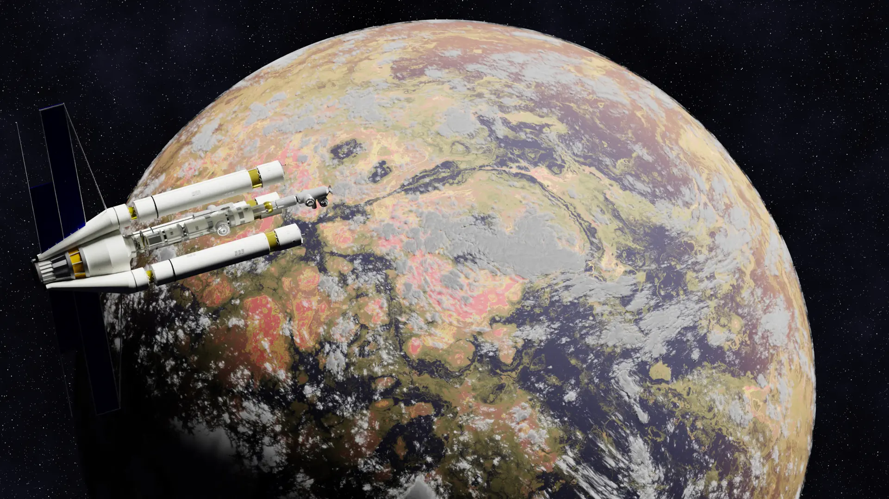
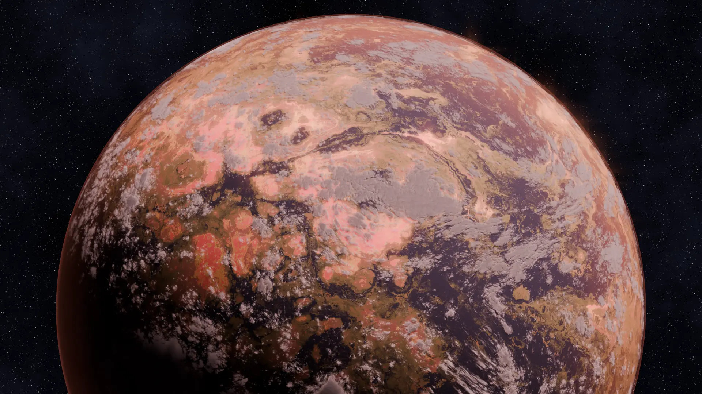

Introduction
This was a quick procedural study where I wanted to make a reddish and green planet using nothing but shader nodes. No image textures at all. Everything you see is built from noise texture combinations and volume shaders. The goal was to see how far I could push Blender's procedural materials to create convincing planetary surfaces.
The whole scene is just 3 large spheres. One for the base planet surface, one for the cloud volume, and one for the atmospheric glow.
Base Planet Surface
For the main surface I used multiple noise texture combinations layered together to get terrain-like generation. Musgrave and voronoi patterns blended with colour ramps to create the landmass shapes and the red-green colour mix.
Cloud Volume
The cloud sphere uses noise textures too but I combined them with map-range nodes and maths nodes to get more prominent cloud shapes. It took some tweaking to get the density right so it looked like actual clouds rather than just noise.
Atmospheric Glow
For the emissive atmospheric effect I used a simple gradient texture along with a reddish emission material. It gives the planet that soft edge glow and makes it feel like it has an atmosphere even though it is all procedural.
Progression
The first render shows the early shader test where I was figuring out the noise scale and colour ramps. The final render is the result after dialling in the volume scattering and tweaking the noise distortion.


Final Render
The final result is a fully procedural planet with red and green colours, a soft atmospheric glow, and decent surface variation. No image textures at all, just pure nodes and math.